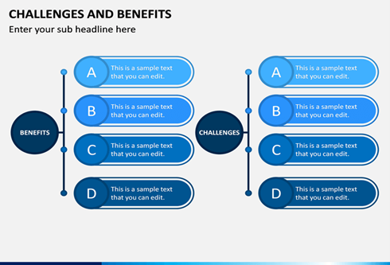
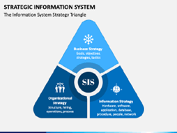
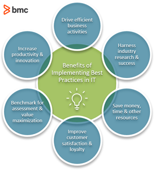
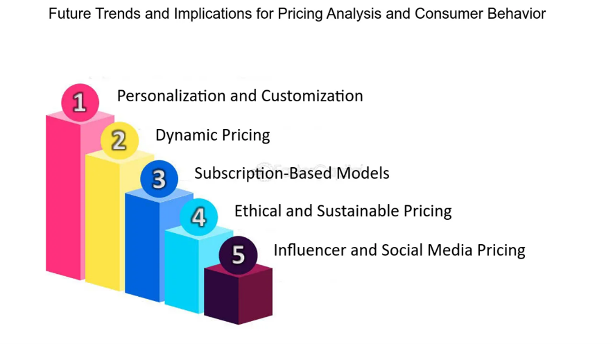

Customizing Information Systems
Customization in Information Systems
Tailoring information systems to meet specific organizational needs is critical for maximizing efficiency. Henrik Stormer and Michael Rosemann's "Customizing Enterprise Resource Planning" provides comprehensive insights into the importance of aligning technology solutions with unique business processes. Customization ensures that technology meets the exact operational requirements of the business.
Benefits and Challenges
Customizing information systems offers a myriad of benefits, from enhancing operational efficiency to gaining a competitive edge. The book by Stormer and Rosemann illustrates case studies from companies such as Salesforce, SAP, Oracle, and more, showcasing the advantages and challenges associated with the customization process.
Tailoring Information Systems to Business Needs
Real-world examples from various industries demonstrate how customized information systems have been effectively aligned with unique organizational requirements, providing competitive advantages. Examples from industries like healthcare, finance, and manufacturing demonstrate how tailored systems can significantly impact operations and overall business success.
Implementation and Best Practices
Implementing customized information systems requires following best practices and strategies. Stormer and Rosemann's book provides insights into the implementation process, including requirements analysis, integration, and post-implementation support, guiding businesses through a successful system customization.
Customization Trends and Future Implications
References such as "Customizing CRM" by Michael Redbord and "The Future of Enterprise Information Systems: Challenges and Opportunities" by Zahir Irani explore future implications and emerging trends in information system customization, shedding light on its evolution and its role in upcoming business landscapes.
